37 objetivo-personal hacer hectáreas verticales, a modos de parques industriales, cerca de aguas naturales, de criaderos de pescados y con los pescados alimentar porcinos les dicen vertical farm a las hectáreas verticales de alimentos de toda clase
 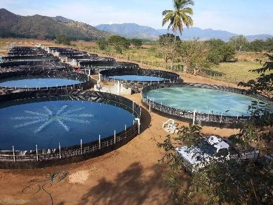
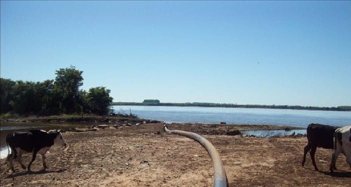
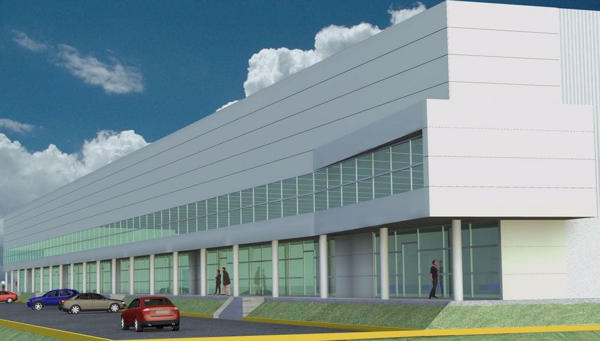
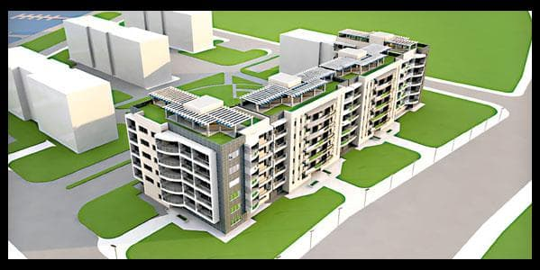
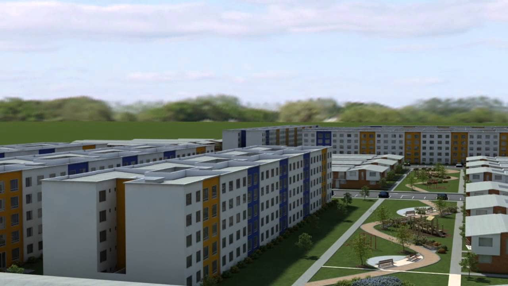
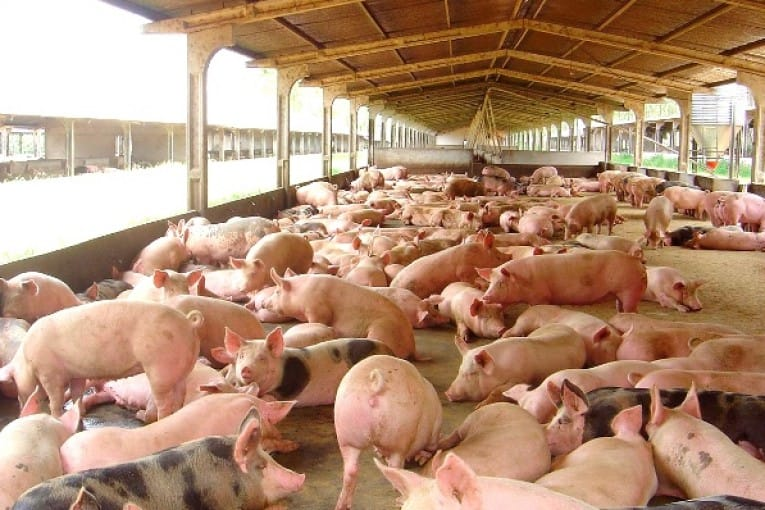
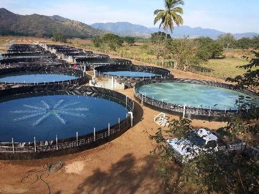
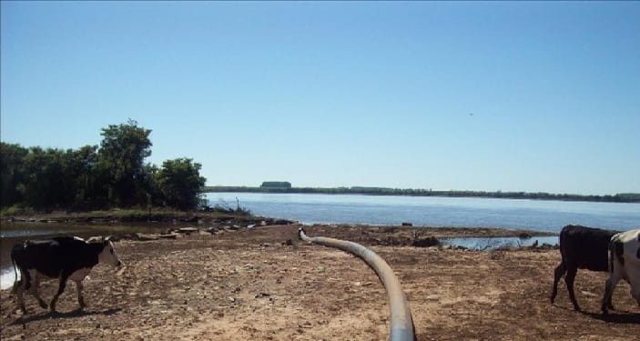
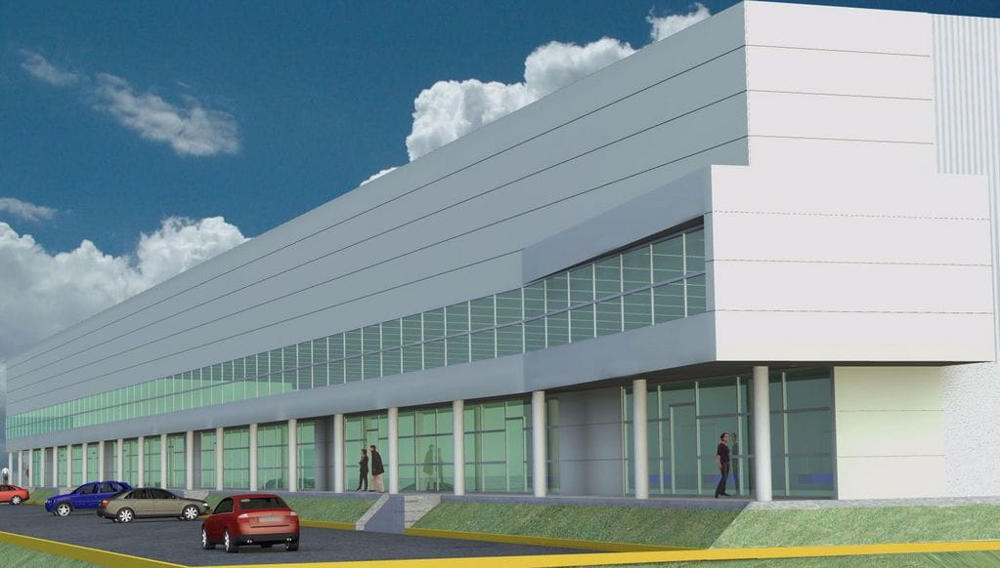
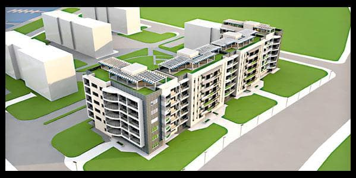
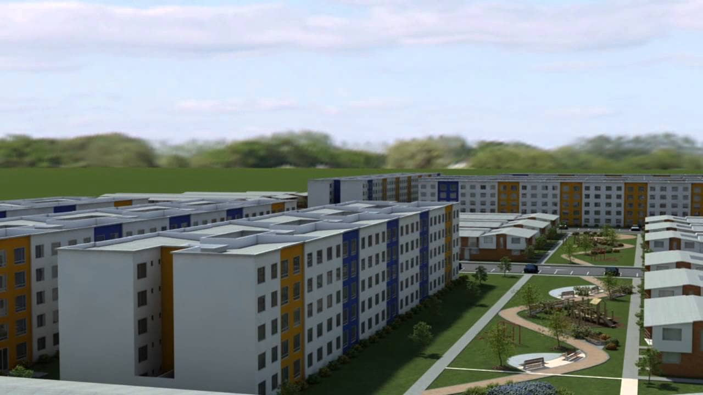
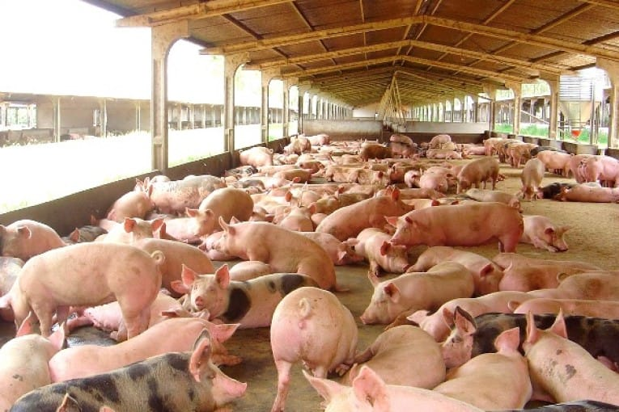